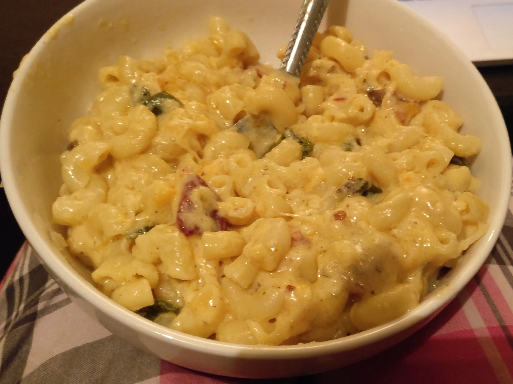

Mac and Cheese

Description
A crowd-pleaser that requires very few incredients. Ideal for making a large dish of to last a few meals.
Ingredients
- Cheese 300g
- Flour 35g
- Milk 500ml
- Butter 135g
- Macaroni 200g
- Breadcrumbs 200g
- Dijon Mustard 2 tsp
Steps
- Melt the butter in a saucepan.
- Stir in the flour until smooth.
- Slowly wisk the milk into the dish and let simmer for 10 mins.
- Meanwhile cook the Macaroni according to the instructions on the packet. Once cooked strain.
- Add the mustard to the milk, flour and butter mixture and season with salt and pepper as needed.
- Mix in 250g of the cheese grated. Once it's melted in, remove from the heat.
- Put the pasta in an ovenproof dish and pour the cheese sauce over it.
- Stir the mixture to ensure all pieces of pasta are coated.
- Bake in the oven at gas mark 6 for 30 mins or until golden brown.
- Grate the remaining cheese over the dish and return to the oven for 5 mins.